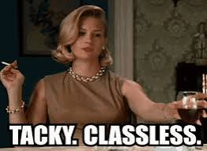

Lora Romney uses a simple story to persuade lawmakers:
Look what kratom gave me.
Her testimony actually includes before-and-after photographs. Before kratom: medical procedures and uncontrolled pain. After kratom: smiling, outdoors, living life.

Romney's testimony labels her post-kratom photos "Controlled pain, living life, being a grandma."
In her advocacy materials, she describes herself as someone who can work, volunteer, care for her grandchildren and "thrive again" because of kratom.
Wonderful.
She got her life back.
Another mother buried her son.
And somehow Romney looked at those two outcomes and decided the grieving mother was the one who needed educating.
On August 3, Romney emailed her kratom materials to that mother ahead of a presentation. She stressed the importance of circulating "the correct information" so parents could "accurately" understand kratom, then helpfully reminded her:
That is almost difficult to comprehend.
Imagine posing with your kayaks because kratom helped you reclaim your life, then emailing a mother whose child died from kratom toxicity to make sure she understands kratom correctly.
Apparently one woman's kayak is evidence.
Another woman's coffin is a misunderstanding.
Romney then introduced herself as a nine-year daily kratom consumer, advocate, educator and president of IPHA, and described kratom as an "incredibly helpful health and wellness tool."
To the grieving mother.
You really couldn't improve the satire.
That isn't compassion.
That's advocacy so completely pickled in its own talking points that it has lost the ability to recognize another human being standing in front of it.
Nobody begrudges Lora Romney her pain relief.
Kayak. Camp. Play with the grandchildren. Put the pictures in the testimony. Tell legislators kratom changed your life.
But if you're going to demand that lawmakers treat your personal experience as meaningful, you'd better be prepared to extend precisely the same courtesy to the mother whose experience ended at a cemetery.
You don't get to hold up your kayak and say:
Then look at a mother's dead child and respond:
That's the part Romney apparently missed.
The mother already received her kratom education.
The tuition was her son.
And sending her a kratom advocacy packet afterward wasn't education.
It wasn't compassion.
It wasn't even decent judgment.

It was tacky. It was crass. And it was breathtakingly cruel.
The documents below are presented so readers can review Romney's statements in their original context. Descriptions summarize the contents; readers are encouraged to examine the underlying records directly.